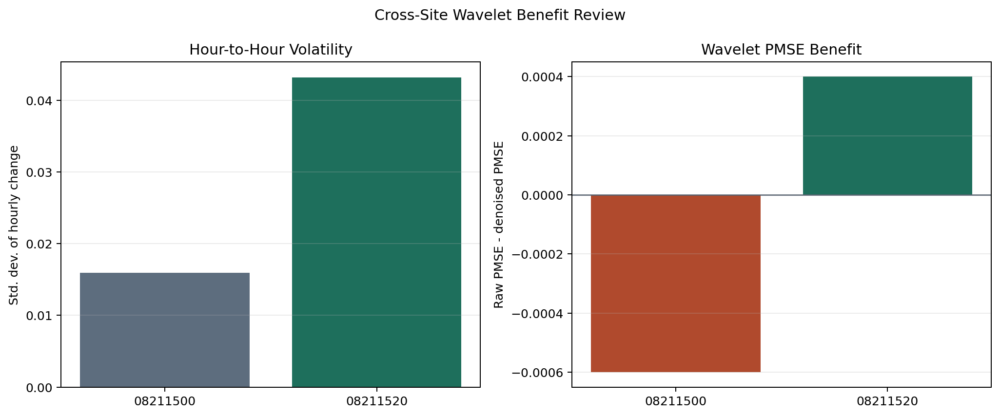

Nueces Rv at Calallen, TX
- Hour-to-hour volatility: 0.0159
- Raw PMSE: 0.0075
- Denoised PMSE: 0.0081
- Wavelet benefit: -0.0006
- Winning branch: raw
This page isolates the question behind the extra gauge: does wavelet denoising help more once the stage signal becomes noisier? The answer in this sample is yes.

The noisiest site also shows the largest wavelet benefit in this sample.